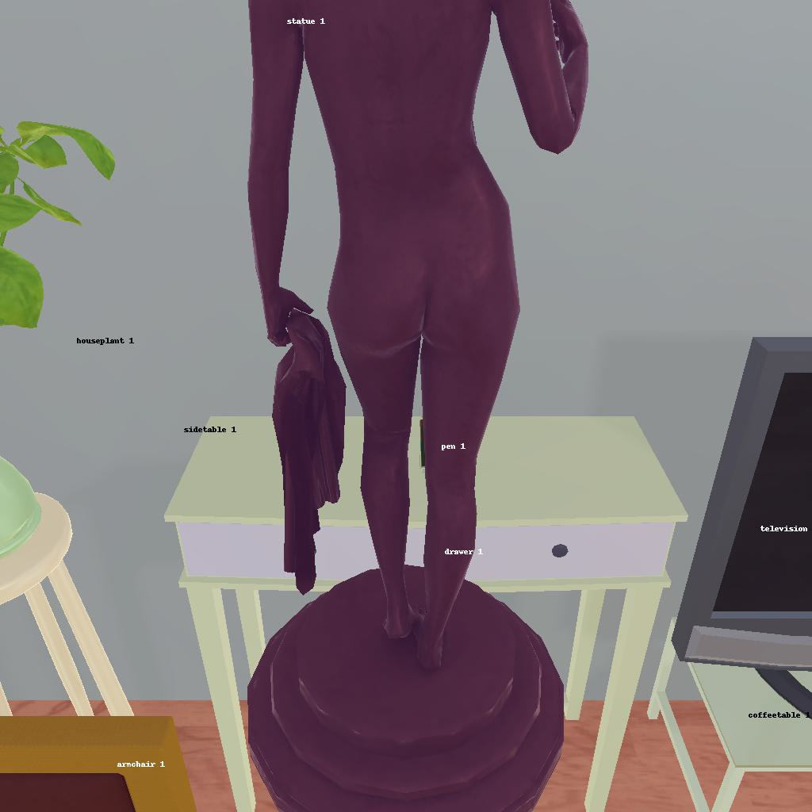

---------------------------------------------------------task: 4---------------------------------------------------------
--------------------------------------------------------------------------------------------------------------------------------------------------------------------
--------------------------------------------------------------------------------------------------------------------------------------------------------------------
Step:--------------------------------------------------------------------------8-------------------------------------------------------------------------------
----------------------------------------
VLM Prompt:
Image1:
Image2:
**Instruction**
1. Analyze the provided image to identify all visible household objects, focusing on those relevant to the task description "examine the statue with the floorlamp."
2. Use the analysis of the image and the task hint "The agent must find an object of the desired type, locate and turn on a light source with the desired object in-hand." to answer the question: what is the most reasonable action in the choices for the task description "examine the statue with the floorlamp"?
4. Decide and write the answer using the template: The answer is: (i): , where i is the real number. If there is no desired object in the image, search every place based on **Initial Observation** to find the object. And if no one is exactly correct, choose a similar answer.
**Initial Observation**
You are in the middle of a room. Looking quickly around you, you can see armchair (1), coffeetable (1-2), sidetable (1), garbagecan (1), drawer (1), sofa (1), diningtable (1)
**Answer Choices**
(1): go to armchair 1
(2): go to coffeetable 1
(3): go to sidetable 1
(4): go to garbagecan 1
(5): go to sofa 1
(6): go to coffeetable 2
(7): go to diningtable 1
(8): open drawer 1
(9): close drawer 1
(10): put statue 1 in/on drawer 1
(11): examine statue 1
(12): examine drawer 1
**Answer**
Let's think step by step by following the instructions.
----------------------------------------
----------------------------------------
Original Response:
First, we need to identify the household objects in the provided image. From both images, we can see the following objects: statue 1, sidetable 1, houseplant 1, pen 1, drawer 1, television, coffeetable, armchair 1.
Now, the task description states "examine the statue with the floorlamp," but there is no floorlamp visible in the provided images. According to the task hint, the agent must find an object of the desired type, locate and turn on a light source with the desired object in-hand. Since we don't see a floorlamp, we must search every place based on the Initial Observation to find the object.
Based on the Initial Observation and the objects we can see in the room, the most reasonable action to find the floorlamp would be to go to different places in the room. However, none of the answer choices directly involve looking for a floorlamp. The closest relevant action that may lead to finding a floorlamp or similar light source would be to go to a place where a floorlamp could be located, such as near a sofa or a coffeetable, as these are common places where floorlamps are positioned.
Given the answer choices provided, the most reasonable action related to the task of examining the statue with a floorlamp would be to go to an area that might have a floorlamp. Since we do not see a floorlamp in the images, we should consider the areas listed in the Initial Observation.
The answer is: (5): go to sofa 1. This choice seems the most reasonable because people often place floorlamps next to sofas for reading or ambient lighting.
----------------------------------------
----------------------------------------
>>> Refine Original VLM Response and Get Pure Action: go to sofa 1
----------------------------------------
-----------------------------------------------------------------
Running time: 30.022273302078247 seconds
Total Money: 1.89806
-----------------------------------------------------------------
-----------------------------------------------------------------
Text Observation:You arrive at loc 5. On the sofa 1, you see a floorlamp 1, and a laptop 1.
-----------------------------------------------------------------
UNSUCCEED